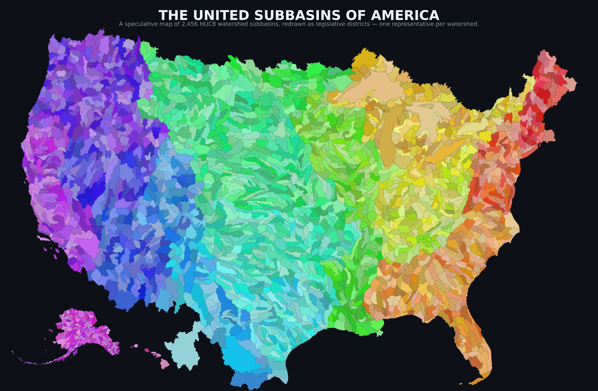

Estuarymandering

About
The United States as 2,456 HUC8 watershed districts, colored by hydrologic region. Gerrymandering’s opposite: districts drawn by rivers instead of incumbents.
Taken literally it is unworkable: an empty desert basin shouldn’t out-vote a dense city. But that is the negotiation the map wants to start, and representation for the water itself is the opening bid.
Made for VIS 102 (Teddy Cruz), UC San Diego, Spring 2026.
Process and tools
Generated in Python (geopandas, matplotlib) from the USGS Watershed Boundary Dataset, queried live from The National Map. The whole map is reproducible from a Makefile, and the code is open so anyone can swap the HUC level, recolor it, or draw their own subbasin republic.